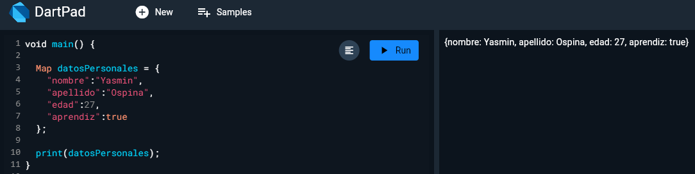
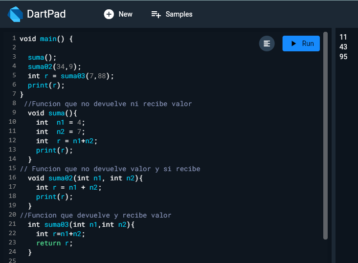

Sesion 1 de Fluter y Dart
Dart es un lenguaje de programación altamente tipado
Usa el método Void como C#, Java y los derivados de C
Toda linea de código termina en ;
Esta identado por llaves como JS

Tipos de datos en Dart

Concatenación e Interpolación

Comentar todo el código por mútiples líneas

Reto
Condicionales en Dart
Más condicionales

Tipo de datos dynamic y var

List

Lista dentro de una lista

Map

Mapa 1 Elemento

List_Maps

Prueba lógica con ítem de lista

Funciones

Tres tipos de funciones diferentes para sumar